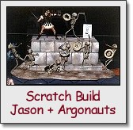
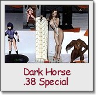
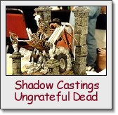
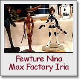
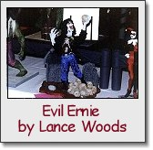
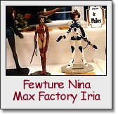
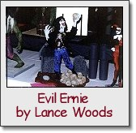

 I'll get to the vendor room and contest in just a bit, but I also wanted to mention some of the other items of interest at the show. There was little question who many folks came to see, Ray Harryhausen. Long lines formed well before each of his signing sessions. The model contest was also a testament to the fondness and well wishes that many have for the special effects pioneer. Sinbad, Jason and the Argonauts, the Ymir, and other kits abounded.
Aliens/Predator and Star Wars artist Dave Dorman's appearance was a special treat for me. I was delighted to have a chance to talk with him and get his autograph along with a cool Alien sketch in my copy of Aliens: Tribes. Other special guests included regulars Bob Burns, Chris Walas, and Dave Cockrum. Nestor the Wonderfestor also made a special appearance at the awards ceremony to pass out prizes and generally make fun of Bob Burns.
Prizes for the annual charity auction were also turbocharged for this year's show. Raffle tickets could be purchased for a chance to win Walas Fly maquettes as well as original props from Naked Lunch and Gremlins. (Sorry Denis, I tried!)
There were so many vendors and kits at the show, that it's tough to mention (let alone remember) all of them! Here are some standouts in my mind:
Janus was on hand featuring their new Hunchback of Notre Dame kit. If you loved their Lon Chaney kit as much as me, then the Hunchback is a no-brainer! This beautifully sculpted piece is designed to hang on your wall. A great solution to dwindling shelf space! Janus was also showing off their gorgeous Lugosi White Zombie kit by Kuntz, a terrific Karloff Mummy in a sarcophogus, and some busts. White Zombie should be available before the Fall Chiller show.
In addition to their current stable of vinyl kits, GEOmetric was showing a new vinyl Kong produced by Max Factory, the re-released Pumpkinhead 1, and the first of many (I hope) imports from Max Factory, the Takeya Devilman. They were also showing some beautiful 1:4 busts of Pumpkinhead and Max Schreck as the Nosferatu.
Grey Zone had a wild display of their skulls. New offerings include their Alien Queen and Godzilla skulls along with a petrified Gillman hand. A real eye popper had to be the 1:1 face hugger (cast from an original prop) that was floating in a specimum cylinder. I'm sure Luis got sick of telling people the cylinder wasn't for sale. My wife will not rest until I have built one now! Other surprises from Grey Zone included the first of their new figure kits, 1:6 castings of a young and vigorous Yoda (!) wielding a sabre and a lumbering Gomorrean guard from Return of the Jedi.
Mad Labs was present with Mike Park's wonderful Tiny Terrors. New additions included a rocket propelled Robocop on a pogo stick, and a gorilla loaded down with weaponry. Mike's continuing to beef up his line with small pieces to spice up your shelves or dioramas. I'd really like to see him do some more realistic 1:4 scale busts though.
 Jim Groman was on hand with stacks of his Beach Blanket Beastie along
with his new Conglomeron kit. The Conglomeron follows the tried and true
"half-naked woman being carted away by an ugly monster" motif. Here, the
monster is an ugly patchwork monster comprised of MANY different animals.
Really bizarre. Of the two, I think the Beastie is the stronger kit.
Jim Groman was on hand with stacks of his Beach Blanket Beastie along
with his new Conglomeron kit. The Conglomeron follows the tried and true
"half-naked woman being carted away by an ugly monster" motif. Here, the
monster is an ugly patchwork monster comprised of MANY different animals.
Really bizarre. Of the two, I think the Beastie is the stronger kit.
I was pleasantly surprised to find Cellar Cast on hand to show their Boris pieces. I spoke with Melinda and Steve about the next Boris piece (due in August). It features a towering demon with his wings wrapped around a nude woman. Beautiful! Their new "shattered wall" base was also quite impressive, and I was quick to tack on an order for one w/ my retailer who was updating his standing orders at the booth.
 Terry Fitton from Monsters in Motion was showing off his company's ever growing collection of original kits. It's no surprise that there were MANY Harryhausen kits to choose from. The Colin Clive as Dr. Frankenstein, Dr. Praetorius, and Peter Cushing as Dr. Van Helsing kits were also available, as was their new Secret Agenda kit. Fans of Dark Horse's ".38 Special" will go crazy over Secret Agenda.
The ever irrepressible Jimmy Flintstone was showing off his large selection of resin car conversion kits, figures, and new Testor's slammer kits. It looks like he may be doing more larger scale figures like his Vampiress kit (or as Lance calls it, the "stick licker"). The sculpting quality may be a bit on the coarse side, but his kits are still a good value for the money IMO.
 Speaking of irrepressible casters, Kevin Stephens of Shadow Castings was on hand to debut his newest kits. Fans of the classic Weird-Oh's car kits will love "Ungrateful Dead" and "Zombie Beach Party." "Dead" features a coffin-like dragster peeling across a drawbridge and leaving a trail of smokey skulls behind. At the wheel is none other than the Grim Reaper, lovin' death and hell bent for chaos. "Zombie" takes a slightly different tack on the same subject, and features a hearse STUFFED full of fun-lovin' zombies. These kits must weigh in at 10-15 lbs, feature MANY resin and white metal parts, and include poster sized Shadow Casting-styled instruction sheets.
Puff n' Stuff were present with STACKS of American and Japanese garage kits. I was sorely tempted by the 1:1 Clive Barker "Yattering" kits they were showing. They had some terrific Volks kits available. (Yes, the Soryama stuff went QUICKLY.) Kaiju fans could go nuts here and at adjacent booths that were loaded to the gills with Gojira and Gamera kits. Godzilla vs. Destroyah kits and toys were in abundance.
 Alternative Images were showing off some of their new pieces. Standouts
included a female Nosferatu, a Wizard of Oz witch w/ Monkey, and the piece
de resistance, a 1:4 Army of Darkness flying demoness DIORAMA. For a mere
$400, you too can own a kit of the demoness flying away whilst reading from
her fave book. Her wingspan was on the order of 25" wide, and the castle
walls were larger still. A very cool sculpture, but this kit has pushed
WAY beyond the range of reasonable kit sizes.
Alternative Images were showing off some of their new pieces. Standouts
included a female Nosferatu, a Wizard of Oz witch w/ Monkey, and the piece
de resistance, a 1:4 Army of Darkness flying demoness DIORAMA. For a mere
$400, you too can own a kit of the demoness flying away whilst reading from
her fave book. Her wingspan was on the order of 25" wide, and the castle
walls were larger still. A very cool sculpture, but this kit has pushed
WAY beyond the range of reasonable kit sizes.
Action Kits International and Shape of Things were tag teaming at their adjacent tables. Matt McWhirt was selling his X-Files-inspired "aliens in a jar" like they were going out of style. Action Kit's Masque of the Red Death was on display, and looked beautiful. If you're interested in this one, I'd jump on it quickly! I didn't get a chance to ask Mike and Matt if they were still in the green for recasting the Curse of Sekenen-Rah.
Action Hobbies of Louisville were showing off their ever growing collection of Mars Attacks kits and "Aurora kits that never made it." Their resin Mars kits are quite cool, and should please fans of the genre that haven't got their fill from Screamin's offerings. Their "Phaedra" kit designed by Dave Cockrum and sculpted by Jim Fawkes remains a personal favorite. I recommend it to folks looking for a reasonably priced kit of a futuristic female.
In addition to presenting the seminar on sculpting, Raven Hood was selling his Heavy Metal Taarna and Holly Wood kits. He also had a really nice kit that looked a bit like Harley Quinn. While Raven's sculpting style isn't exactly to my taste, I know a lot of folks appreciate his outstanding work. If you're a fan of his stuff, you'll want to be sure to check out the harlequin!
Terry Webb and David Fisher were as often gone as not from their table. No doubt conducting interviews or giving seminars. Interestingly, copies of Terry's old books were available for sale, as were back issues of AFM. I could've kicked myself for not immediately grabbing a copy of AFM #0 as soon as I hit the dealer room. Live and learn.
That's a brief rundown of most of the garage kit retailers and vendors that were on hand. Of course there were MANY other dealers selling kits and toys. I don't think many anime kit fans went away disappointed this year. That genre seems to be better represented at the dealer tables each year. I know my wife was delighted to walk away w/ a Belldandy kit that she's been searching for for a while!
Another surprise related to the vendor tables IMO, was the availability and affordability of BUILD UPS. It's not at all uncommon to find old Aurora kit build ups at the tables, but I was witness to a rather strange phenomenon this time around - painted garage kit build ups available at or near their original prices. Weird! My wife walked with a Kaiyodo Mina and Dracula for around $15 more than I'd seen them listed at. A similar example was a really nice Dark Horse Predator 1 build up (w/ original box and instructions) for $300. Some one else apparently thought it was a good deal too, because it didn't stick around for very long! Only time will tell if this is a new trend...
What would a model show be without a model contest? I'm not sure, but Wonderfest had a contest, so we'll not ponder the question any further. Last year's contest was proclaimed a "Judge's Nightmare" by several people I spoke with. This year's contest had to be a Judge's vision of Hell! I can't begin to describe the variety and quality of the kits that were entered this year. Since there was a special Ray Harryhausen award to be given away this year, it's little wonder that MANY of the entries were kits based on his characters.
 





Aliens and Predators, usually in abundance, were few and far between this year. Dinos made a comeback after a disappointing turn out last year. Anime-related kits also made progress this year, as there were more than I've ever recalled seeing before. Hopefully organizers will get the hint that this is a genre that deserves its own category. I could go on, but I'd be overlooking many wonderful pieces. I'm hoping to provide some photos of show entries to Denis, and I'm sure the magazines will be loaded with pix and lists of winners in another few months. (Ah, the joys of standard print and snail mail!) I would like to nominate the fellow who finished the Sideshow Frankenstein kit for the "Hardcore Stud Garage Kit Builder from Hell (tm)" award for turning that kit out in under a week. The man could not have slept at all, and the paint job wasn't bad looking!
I'll hop up on my soapbox for just a moment to complain about the treatment that nudes received at the show. This is the first year that I've seen kits with nudity either turned around or censored in someway. (One exception was a Reds kit entered by Rick LaRue last year.) I was shocked and disgusted to see a post-it note stuck on the front of a .38 Special. Likewise, the detail work on several Soryama pieces and two Return of the Living Dead 3 kits couldn't be enjoyed due to censorship. Strangely, a couple kits (one Silene comes to mind) were ignored in this regard. While I can appreciate not wanting to expose minors to lewd or suggestive works, none of the kits entered were not significantly more lewd than viewing a nude painted by an old master. I'll also point out that children could view Reds' kits featuring erotic females at several vendor tables.
The question that remains in my mind now that Wonderfest has closed its doors for 1996 is "What of next year?" It's unlikely IMO that Harryhausen will make another visit next time around. If, as I suspect, the crowd was inflated by his visit this year, what will next year be like? Regardless, I know one modeler who will be back for more!
The Gremlins in the Garage webzine is a production of Firefly Design. If you have any questions or comments please get in touch.
Copyright © 1994-1997 Firefly Design.
{kind=link}
{kind=link}
{kind=link}